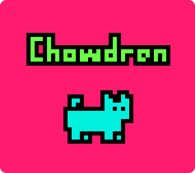
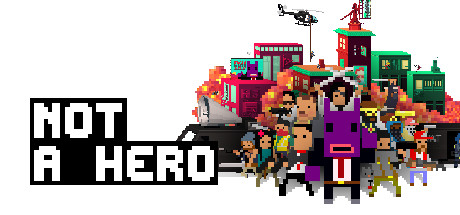
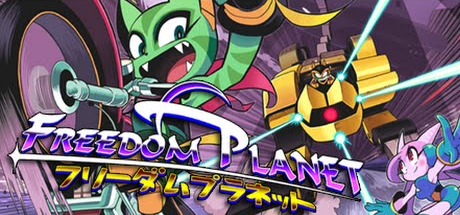
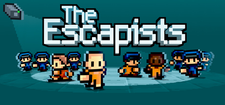
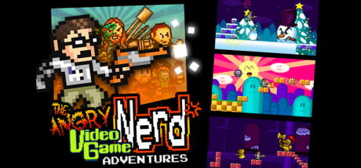
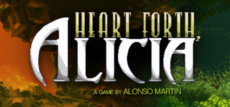
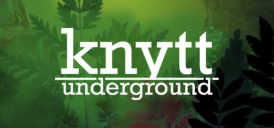
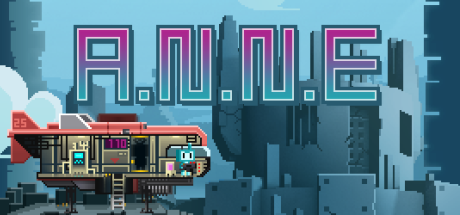
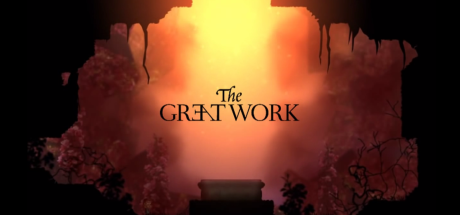

Chowdren is a blazingly fast runtime for Clickteam Fusion.
It's cross-platform, running under desktop, mobile and console platforms.
FEATURES
GAMES
Games already using Chowdren include

Ports to Windows, Mac OS X, Linux, PS4

Ports to Windows, Mac OS X, Linux, Wii U

Ports to Mac OS X, Linux

Ports to Wii U, 3DS

Ports to Mac OS X, Linux, PS4, PS Vita, Wii U, 3DS

Ports to Windows, Mac OS X, Linux, Steam, Wii U

Ports to Windows, Mac OS X, Linux, Wii U, PS4

Ports to Windows, Mac OS X, Linux
PRICING
The runtime is 100% free for open-source projects, under the terms of the GPL.
The commercial license does not have a fixed pricing model, so it is discussed on
a case-by-case basis.
Please contact mat (at) mp2 (dot) dk for a quote. Serious proposals only, please!
INSTALL
For more information about how to install Chowdren, please see the forum thread.
For a quick tutorial, see this.